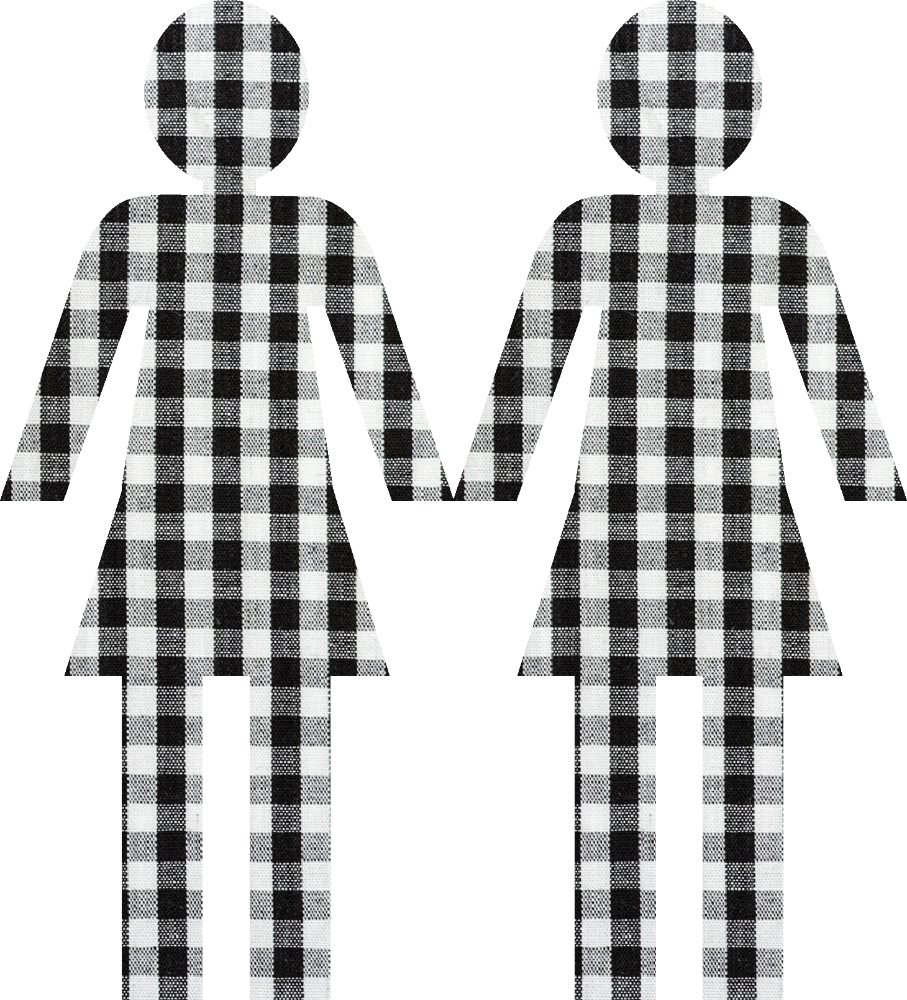
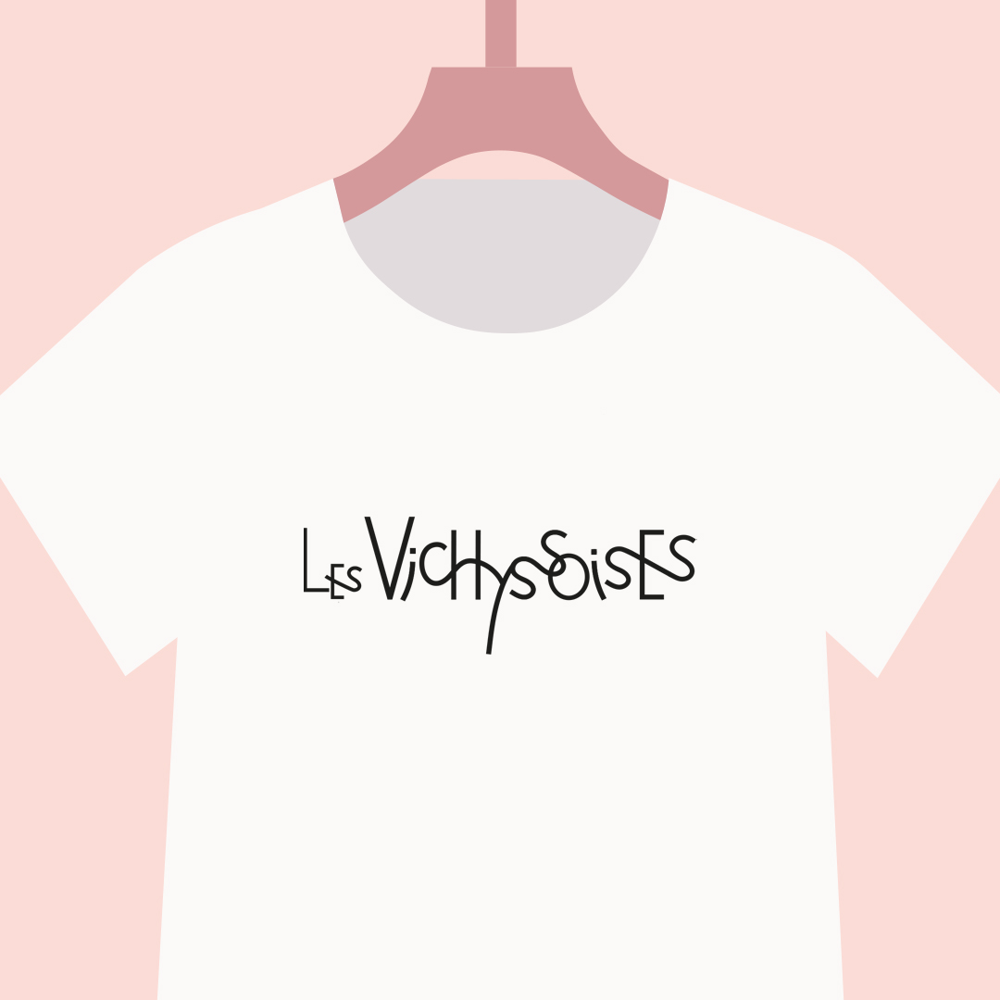
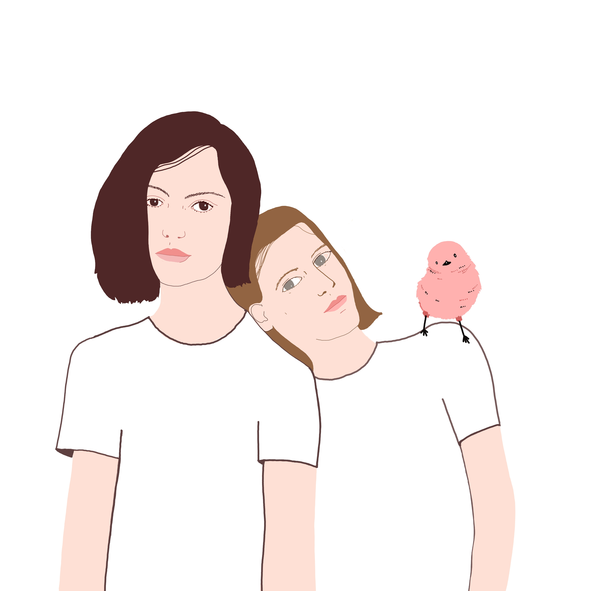
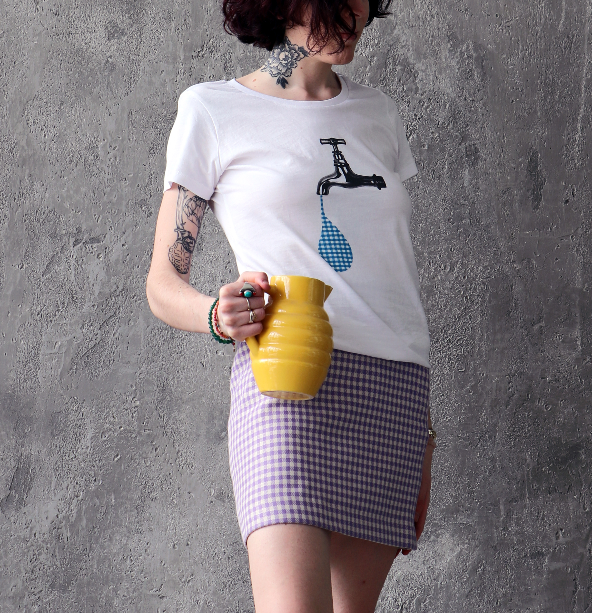
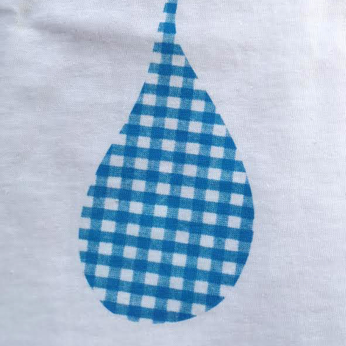
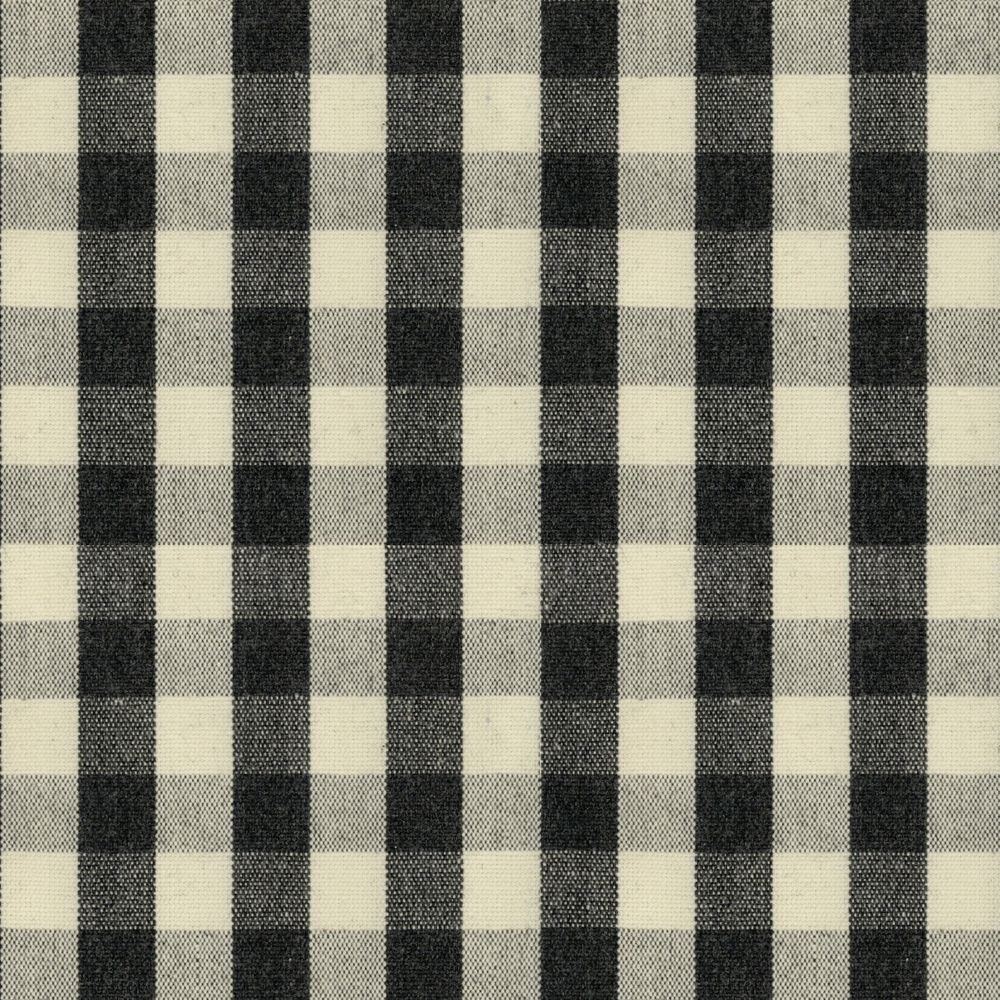
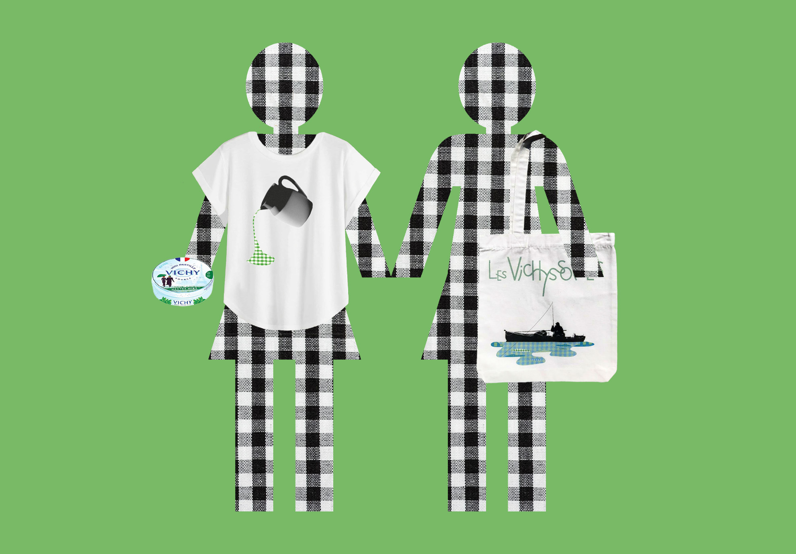
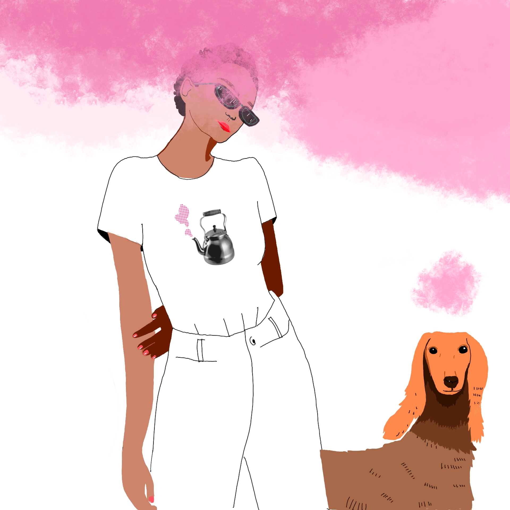
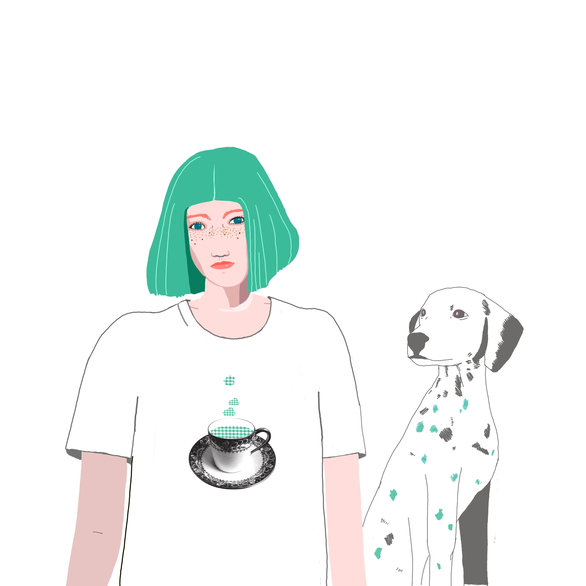
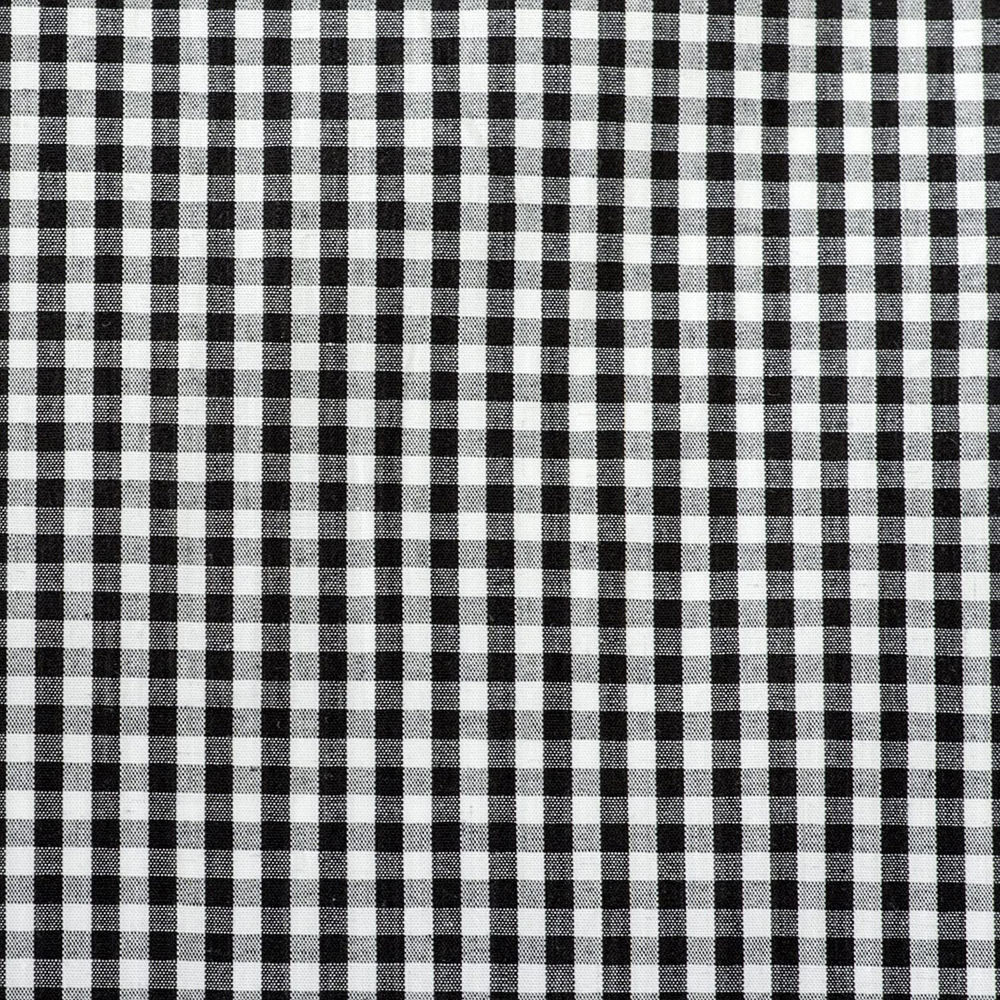

Le projet naît de l'amitié précieuse entre deux filles d'exception, Évelle Oudard et Émilie Picand, toutes deux issues de la ville de Vichy. L'idée est de proposer des collections de tee shirts en laissant carte blanche à des artistes autour du thème du fameux petit carreau Vichy. Pour ce projet, Évelle et Émilie ont fait appel à ma créativité afin de leur proposer un logo mais aussi une déclinaison en pictogramme, des illustrations et une mise en page afin de développer une campagne Ulule. L'histoire se poursuit aujourd'hui avec plusieurs collections à venir et un réseau qui se construit au jour le jour ! Une très belle aventure !
La typographie est ici dessinée à la main pour une signature unique. Libre et dansante, joyeuse et rebelle, elle est bien sûr inspirée des personnalités douces et hautes en couleurs des deux Vichyssoises mais aussi prend sa source dans l'Art Nouveau très présent dans la ville de Vichy.












